Thirty figures made by diff-ref-struct's own pipeline from the files in renamed/: fifteen projections with hidden lines and fifteen maps of the intensity on the temperature–2θ and time–2θ planes. The projections: the 19 long scans against temperature, all 100 scans against time, and the 39 scans of the 1270 °C hold against time into it; each over 0.5–27° and in four 2θ windows. Every curve is a scan as the beamline reduced it; every character is typeset by LuaLaTeX in Latin Modern; every caption below is the one written with the figure. Temperatures are nominal set points (F07). The two stages they show are F09.
drs 0.75.0 (the core of diff-ref-struct: the files read, the plot sets, the projection) and drs-publish 0.34.0 (F3, view = "projection", preset upvehu-phd, full width)
Maps' grid
the scans rebinned by the core (drs data op … rebin mode=average): 0.01° for the whole pattern, 0.005° for the windows; square-root colour scale
Windows
5.4–6.2° (the 5.79° reflection alone), 7–10° (broad maxima and three sharp reflections), 11.3–13°, 14–15°; the whole pattern from 0.5° (beamstop left out)
Projections: the 19 long scans against temperature
Publication set drs/Publish/esrf-series.drp, built to drs/Publish/esrf-series/.
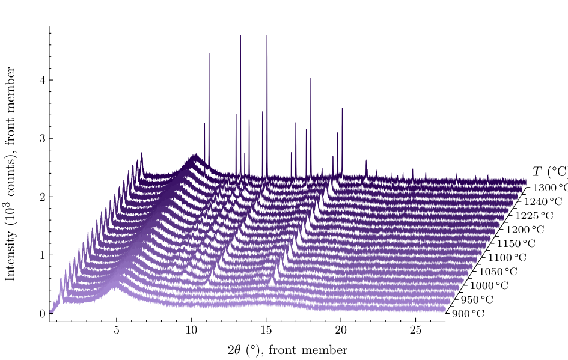
The 19 long scans against temperature, 0.5–27°. Sample 400_4 (ESRF ID22, 10–11 June 2026, proposal HC-6528): the 19 long scans, from 900 °C (front) to 1300 °C (back), as a projection with hidden lines over 0.5–27° in 2θ; each pattern is moved by 0.3° to the right and 120 counts up from the one before. The patterns are the beamline's reduced files as received (intensity in counts after its normalisation, which makes every scan's integral the same); the first 0.5° (beamstop shadow and direct beam) is left out. Temperatures are the nominal set points typed into the scan names; there is no thermocouple record in the files. Fourteen scans are the heating ramp in 25 °C steps (900 to 1225), one more at 1225 and two at 1240 close the ramp, and the scans at 1290 and 1300 are the long exposures taken after the time series at those temperatures. The pattern is nearly featureless to 950 °C; broad maxima appear at 1000 °C and stay to 1240 °C; the two back patterns show the sharp reflections that grow from the 1270 °C hold onward (the hold itself is in the next figures).ramp-full · projection · PNG · PDF
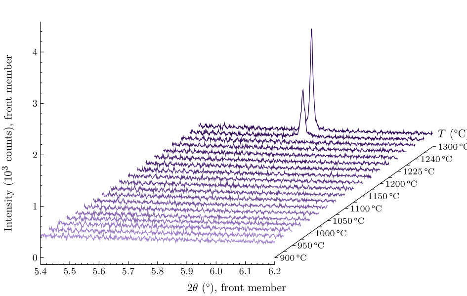
The long scans, window 5.4–6.2°. The 19 long scans of the previous figure in the window 5.4–6.2°, projected with a step of 0.03° and 120 counts per pattern, 900 °C in front. Nothing is seen here below 1240 °C; the reflection near 5.79°, the strongest of the second stage, is present in the two back scans (1290 and 1300 °C, taken after the holds).ramp-w1 · projection · PNG · PDF
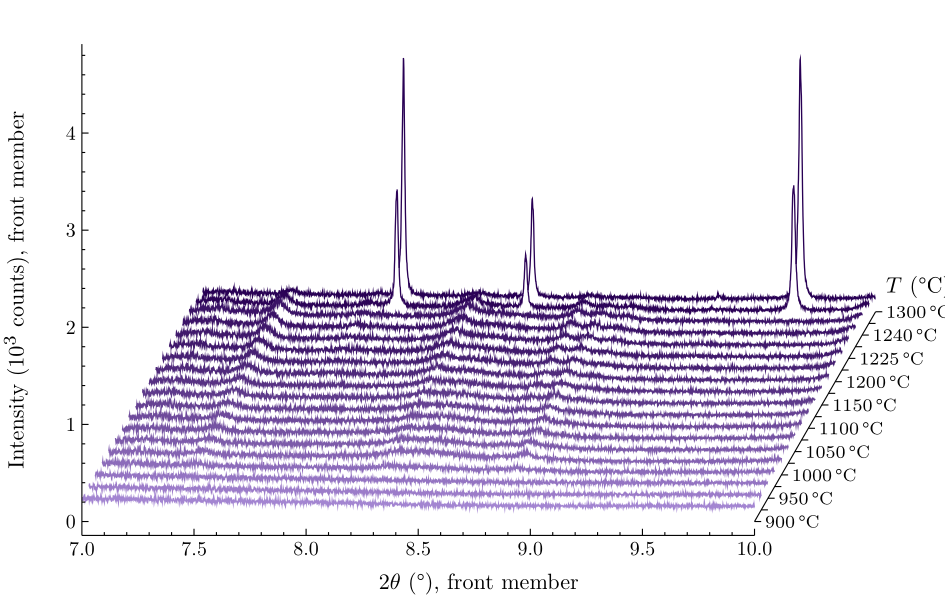
The long scans, window 7–10°. The 19 long scans in the window 7–10°, step 0.03° and 120 counts per pattern, 900 °C in front. From 1000 °C on, broad maxima near 7.4, 8.2, 8.7 and 10.2° grow out of the flat pattern of 900–975 °C: a first, poorly crystalline or nanometric stage, whose maxima change little between 1000 and 1240 °C. The two back scans (1290, 1300 °C, after the holds) show sharp reflections at 7.89, 8.47 and 9.66° on top of them.ramp-w2 · projection · PNG · PDF
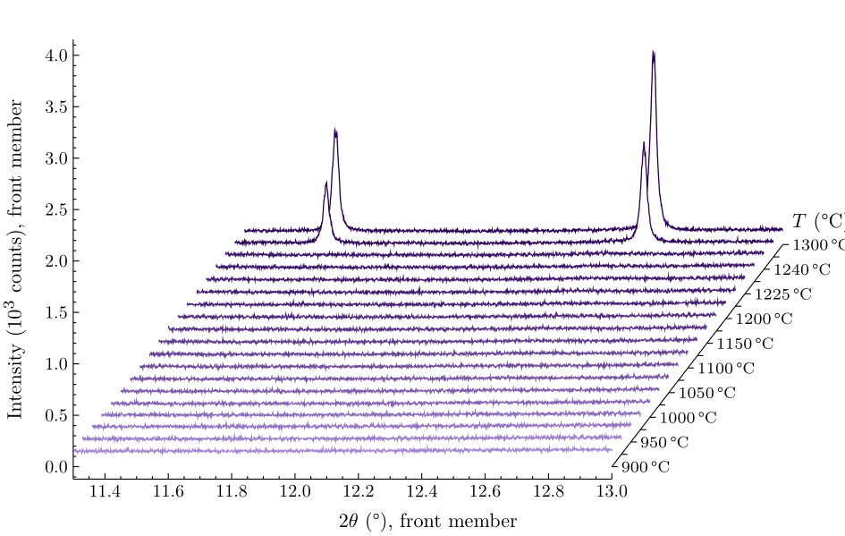
The long scans, window 11.3–13°. The 19 long scans in the window 11.3–13°, step 0.03° and 120 counts per pattern, 900 °C in front: the sharp reflections at 11.59 and 12.59° belong to the second stage and appear only in the two back scans.ramp-w3 · projection · PNG · PDF
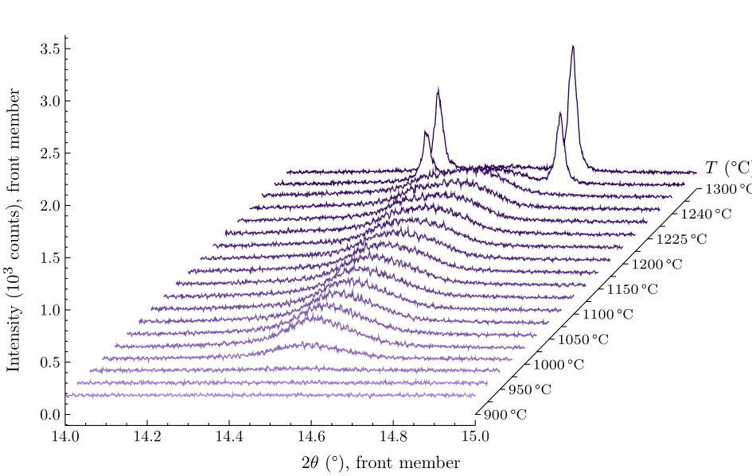
The long scans, window 14–15°. The 19 long scans in the window 14–15°, step 0.03° and 120 counts per pattern, 900 °C in front. A broad maximum near 14.5° belongs to the first stage (from 1000 °C); the sharp reflections at 14.37 and 14.70° to the second (1290 and 1300 °C).ramp-w4 · projection · PNG · PDF
Projections: all 100 scans against time
Publication set drs/Publish/esrf-series.drp, built to drs/Publish/esrf-series/.
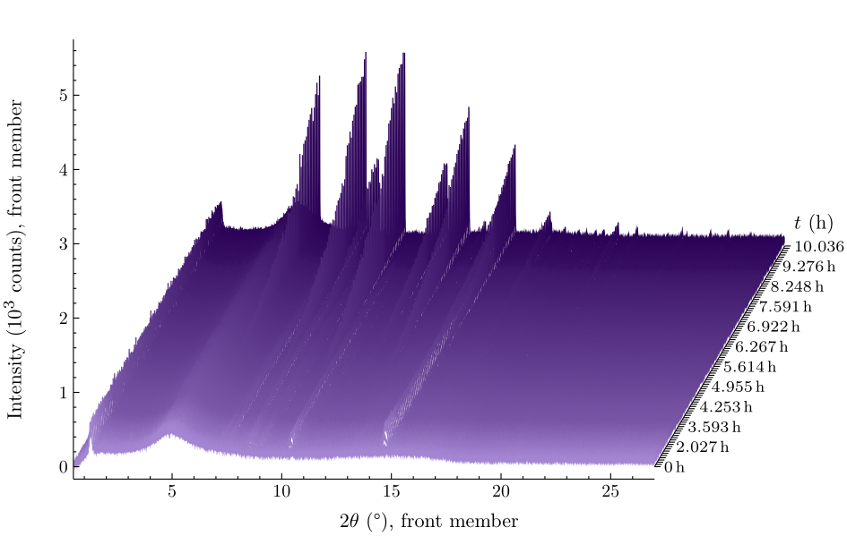
All 100 scans against time, 0.5–27°. All 100 scans with the sample, against time since the first scan (18:09:48 on 10 June 2026, front) to 10.0 h (the closing long scan at 1300 °C, back), as a projection with hidden lines over 0.5–27°, each pattern moved by 0.06° and 30 counts from the one before. Time runs on the oblique axis; the temperature programme behind it is: the ramp 900 to 1225 °C in 25-degree steps during the first 3.1 h, short scans every 262 s at 1240, 1245 and 1250 °C to 4.5 h, the hold at 1270 °C from 4.6 to 7.4 h, then 1275, 1280, 1290 and 1300 °C to the end. Long scans (19) and short scans (81) are drawn alike: the reduction normalised their integrals. The sharp reflections start during the 1270 °C hold and grow to the end; the broad maxima of the first stage are visible from about 0.9 h (1000 °C). Scan 085 (8.8 h, 1290 °C) has a relative error well above its class and is included as measured.all-full · projection · PNG · PDF 12.5 MB in drs/Publish/esrf-series/, not copied
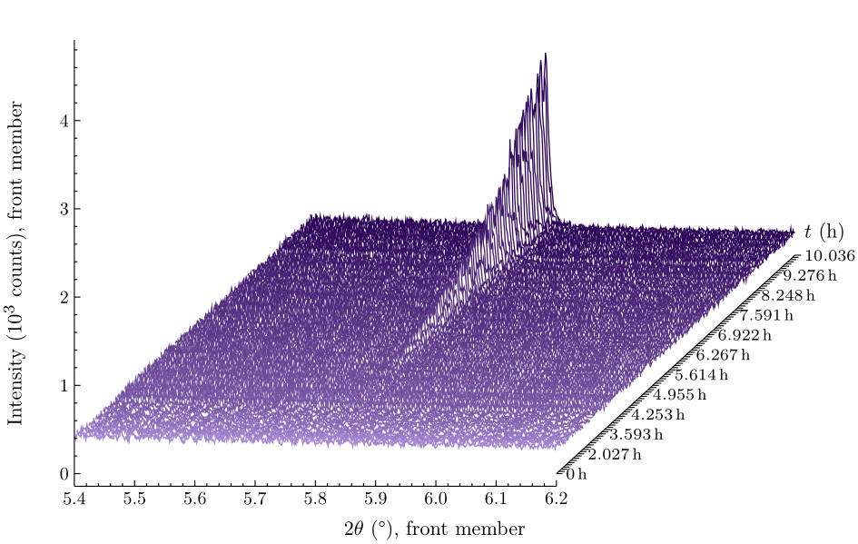
All scans, window 5.4–6.2°. All 100 scans against time in the window 5.4–6.2°, projected with a step of 0.004° and 25 counts per pattern, the first scan in front. The reflection at 5.79° is absent through the ramp and the 1240–1250 °C series, appears during the 1270 °C hold (from about 5 h) and grows steadily to 1300 °C; it is the cleanest single peak to follow for kinetics.all-w1 · projection · PNG · PDF
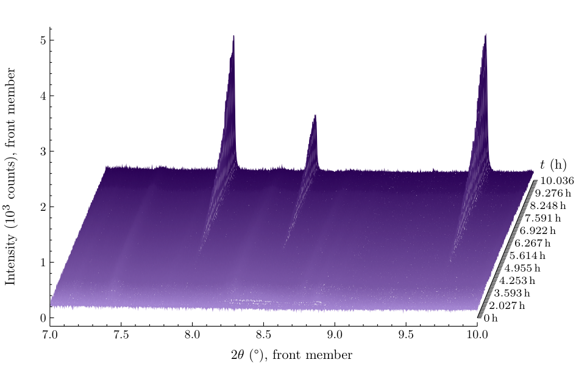
All scans, window 7–10°. All 100 scans against time in the window 7–10°, step 0.004° and 25 counts per pattern, the first scan in front. The broad maxima of the first stage (7.4, 8.2, 8.7, 10.2°) rise from about 0.9 h and persist; the sharp reflections of the second stage (7.89, 8.47, 9.66°) emerge from them during the 1270 °C hold and dominate by the end. Where a sharp reflection sits on a broad maximum, the two stages coexist.all-w2 · projection · PNG · PDF
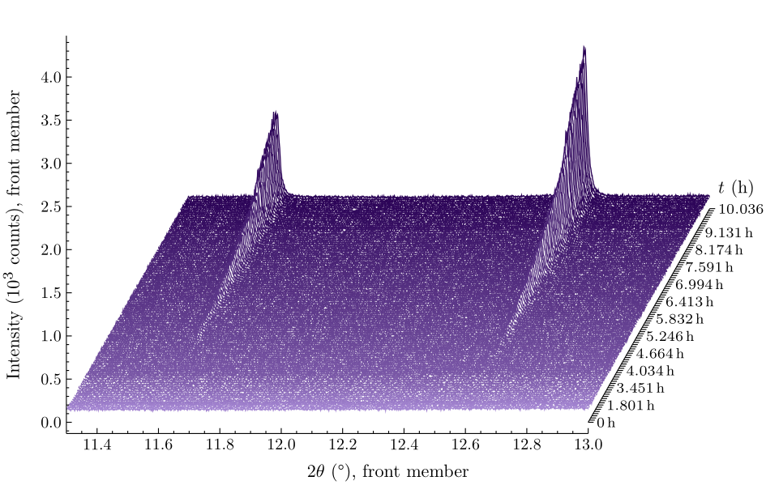
All scans, window 11.3–13°. All 100 scans against time in the window 11.3–13°, step 0.004° and 25 counts per pattern, the first scan in front: the reflections at 11.59 and 12.59° of the second stage, from the 1270 °C hold to the end.all-w3 · projection · PNG · PDF
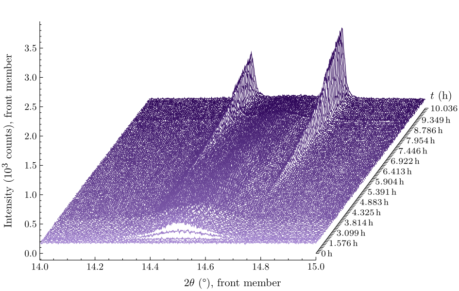
All scans, window 14–15°. All 100 scans against time in the window 14–15°, step 0.004° and 25 counts per pattern, the first scan in front: the broad maximum near 14.5° of the first stage, and the sharp reflections at 14.37 and 14.70° of the second growing beside it from the 1270 °C hold onward.all-w4 · projection · PNG · PDF
Projections: the 1270 °C hold, 39 scans against time into it
Publication set drs/Publish/esrf-series.drp, built to drs/Publish/esrf-series/.
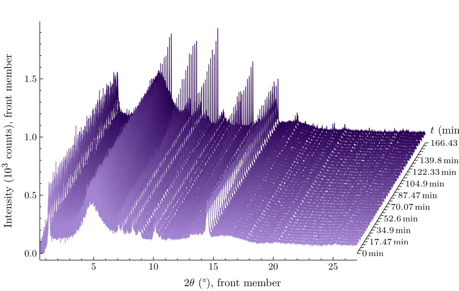
The 1270 °C hold, 39 scans, 0.5–27°. The hold at 1270 °C: 39 short scans every 262 s from 22:45 on 10 June 2026 (front, t = 0) to 166 min later (back), as a projection with hidden lines over 0.5–27°, each pattern moved by 0.15° and 25 counts from the one before. At constant nominal temperature the sharp reflections of the second stage appear and grow throughout the hold while the broad maxima of the first stage remain: the natural dataset for the kinetics of the transformation. The temperature is the set point; its stability during the hold is not recorded in the files.hold-full · projection · PNG · PDF 4.9 MB in drs/Publish/esrf-series/, not copied
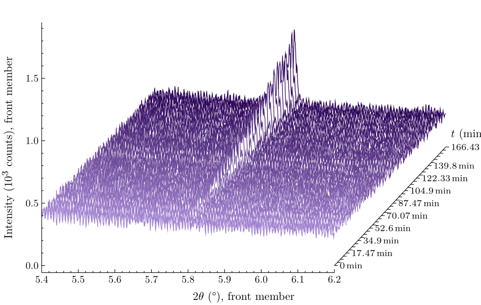
The hold, window 5.4–6.2°. The 1270 °C hold in the window 5.4–6.2°, step 0.008° and 25 counts per scan, t = 0 in front: the growth of the 5.79° reflection from nothing over 166 min, scan by scan.hold-w1 · projection · PNG · PDF
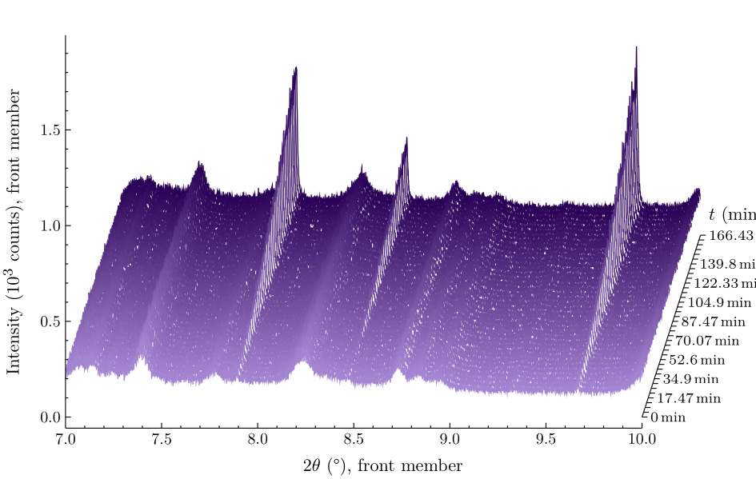
The hold, window 7–10°. The 1270 °C hold in the window 7–10°, step 0.008° and 25 counts per scan, t = 0 in front: the sharp reflections at 7.89, 8.47 and 9.66° rise out of the broad maxima of the first stage, which do not visibly weaken over the hold.hold-w2 · projection · PNG · PDF
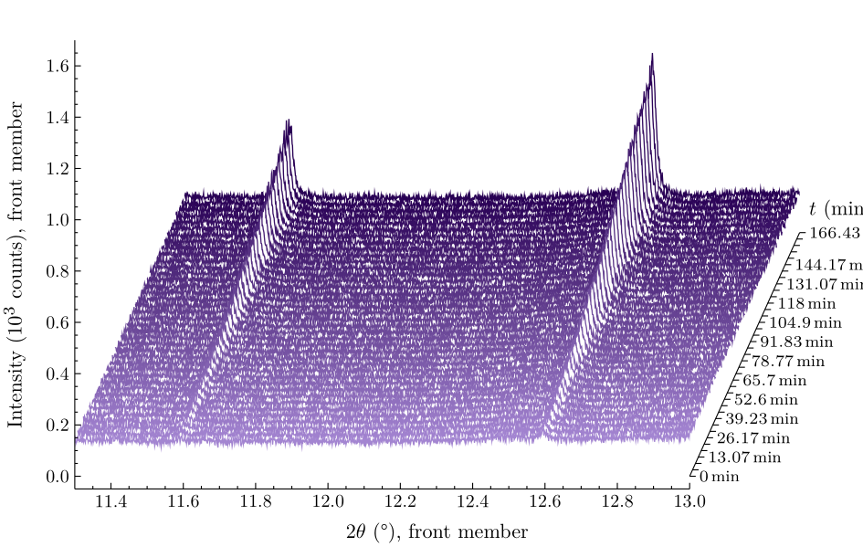
The hold, window 11.3–13°. The 1270 °C hold in the window 11.3–13°, step 0.008° and 25 counts per scan, t = 0 in front: the reflections at 11.59 and 12.59° growing over 166 min.hold-w3 · projection · PNG · PDF
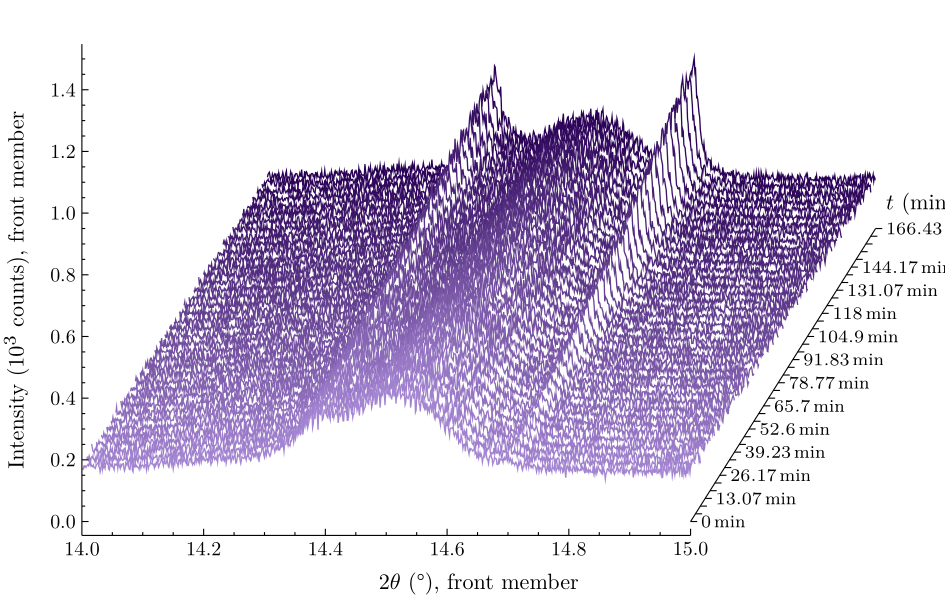
The hold, window 14–15°. The 1270 °C hold in the window 14–15°, step 0.008° and 25 counts per scan, t = 0 in front: the reflections at 14.37 and 14.70° of the second stage growing beside the broad first-stage maximum near 14.5°.hold-w4 · projection · PNG · PDF
Maps: the temperature–2θ plane, one scan per nominal temperature
Publication set drs/Publish/esrf-maps.drp, built to drs/Publish/esrf-maps/.
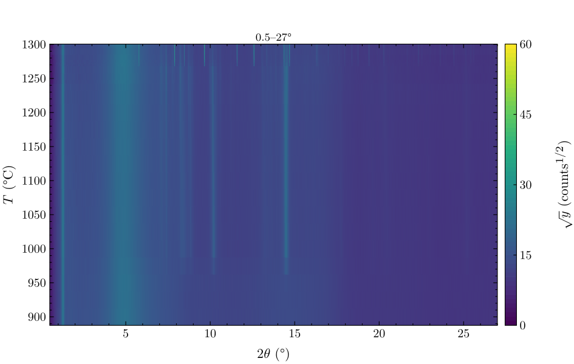
The temperature–2θ plane, one scan per nominal temperature, 0.5–27°. Sample 400_4 (ESRF ID22, proposal HC-6528, 10–11 June 2026): the intensity on the temperature–2θ plane. One scan per nominal temperature, 25 rows from 900 °C (bottom) to 1300 °C (top): the long scan taken at each temperature where there is one, else the last scan of its series; each row spans the midpoints to its neighbours, so the 25 °C steps of the ramp are tall rows and the 1–5 °C steps between 1240 and 1300 °C narrow ones. 2θ from 0.5 to 27° on a 0.01° grid (the files' 0.001° points averaged ten at a time by the core); the intensity on a square-root colour scale, so that the weak broad maxima of the first stage show beside the strong sharp reflections of the second. Temperatures are set points typed into the scan names. Nothing to 950 °C; broad bands from 1000 °C; sharp lines from 1270 °C, brightest at 1300 °C.map-temp-full · map · PNG · PDF
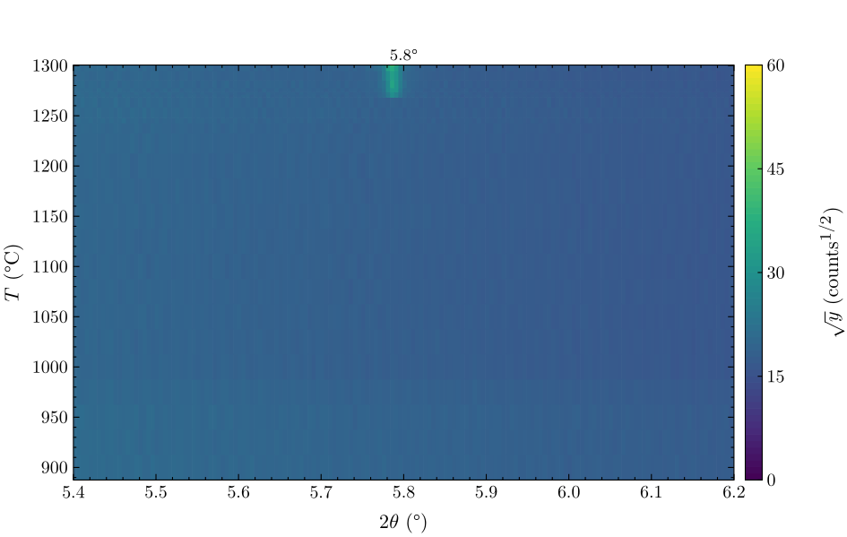
Temperature–2θ, window 5.4–6.2°. The temperature–2θ plane in the window 5.4–6.2°, one scan per nominal temperature, on a 0.005° grid, square-root colour scale: the 5.79° reflection appears at 1270 °C and brightens to 1300 °C; nothing below.map-temp-w1 · map · PNG · PDF
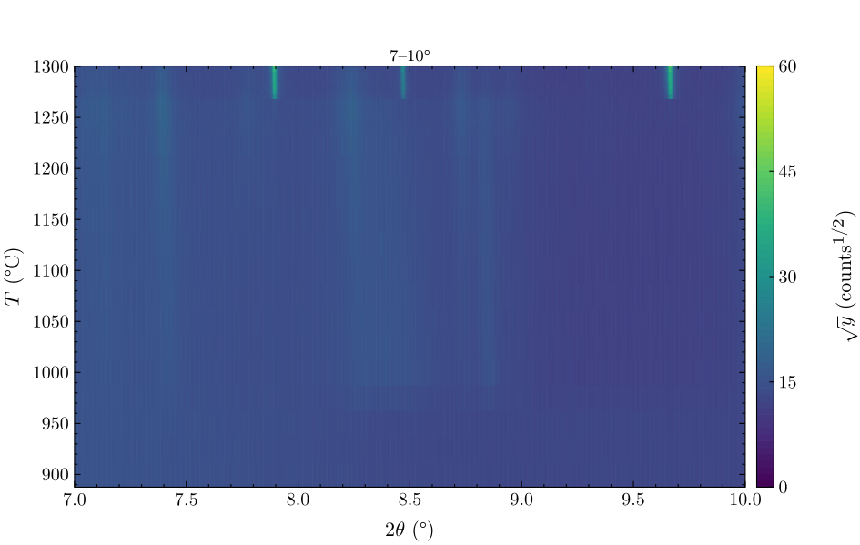
Temperature–2θ, window 7–10°. The temperature–2θ plane in the window 7–10°, one scan per nominal temperature, 0.005° grid, square-root colour scale. The broad bands of the first stage (near 7.4, 8.2, 8.7 and 10.2°) start at 1000 °C and persist to the top; the sharp lines of the second stage (7.89, 8.47, 9.66°) start at 1270 °C. Where a line crosses a band the two stages coexist.map-temp-w2 · map · PNG · PDF
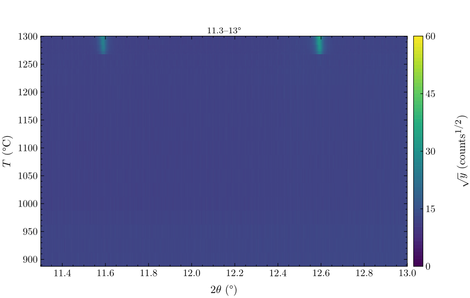
Temperature–2θ, window 11.3–13°. The temperature–2θ plane in the window 11.3–13°, one scan per nominal temperature, 0.005° grid, square-root colour scale: the second stage's lines at 11.59 and 12.59° from 1270 °C on.map-temp-w3 · map · PNG · PDF
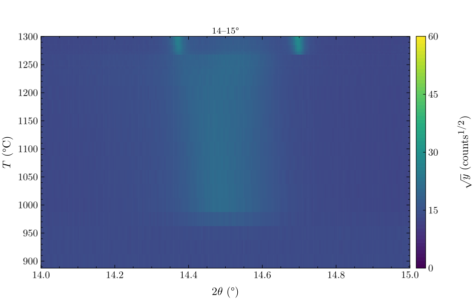
Temperature–2θ, window 14–15°. The temperature–2θ plane in the window 14–15°, one scan per nominal temperature, 0.005° grid, square-root colour scale: the first stage's broad band near 14.5° from 1000 °C, the second stage's lines at 14.37 and 14.70° from 1270 °C.map-temp-w4 · map · PNG · PDF
Maps: the time–2θ plane, all 100 scans
Publication set drs/Publish/esrf-maps.drp, built to drs/Publish/esrf-maps/.
The time–2θ plane, all 100 scans, 0.5–27°. The intensity on the time–2θ plane for all 100 scans with the sample: one row per scan at its time since the first (18:09:48 on 10 June 2026, bottom) to 10.0 h (top), rows spanning the midpoints to their neighbours (the ramp's 13.5 min scans are taller rows than the series' 4.4 min ones); 2θ from 0.5 to 27° on a 0.01° grid averaged by the core from the files' 0.001° points; square-root colour scale. The temperature programme behind the time axis: 900 to 1225 °C in 25 °C steps to 3.1 h; 1240, 1245, 1250 °C to 4.5 h; the 1270 °C hold from 4.6 to 7.4 h; 1275, 1280, 1290 and 1300 °C to the end. The broad bands of the first stage begin near 0.9 h; the sharp lines of the second begin inside the hold and brighten to the top. Scan 085 (8.8 h) is included as measured.map-time-full · map · PNG · PDF
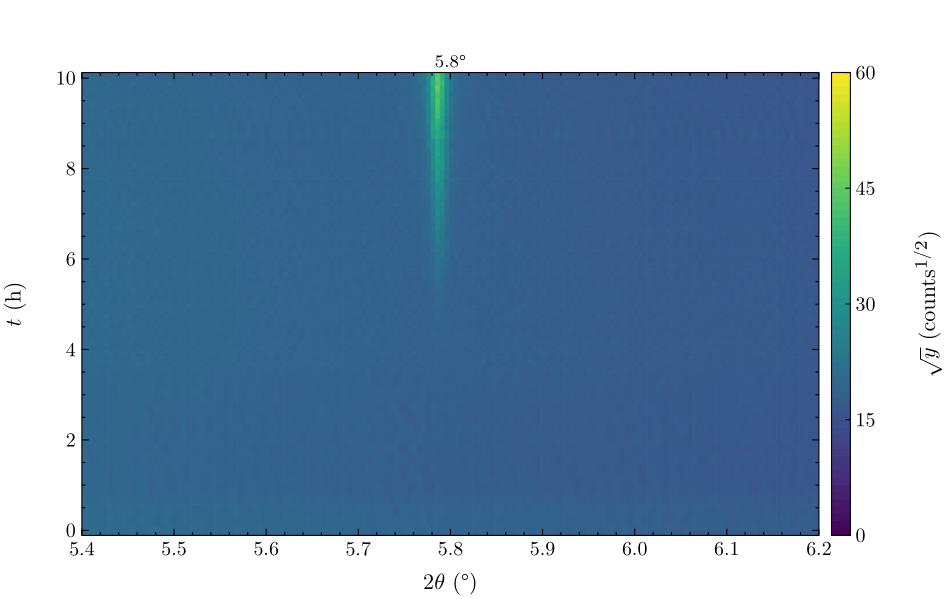
Time–2θ, all scans, window 5.4–6.2°. The time–2θ plane for all 100 scans in the window 5.4–6.2°, 0.005° grid, square-root colour scale: the 5.79° reflection is born during the 1270 °C hold (from about 5 h) and brightens without pause to the end.map-time-w1 · map · PNG · PDF
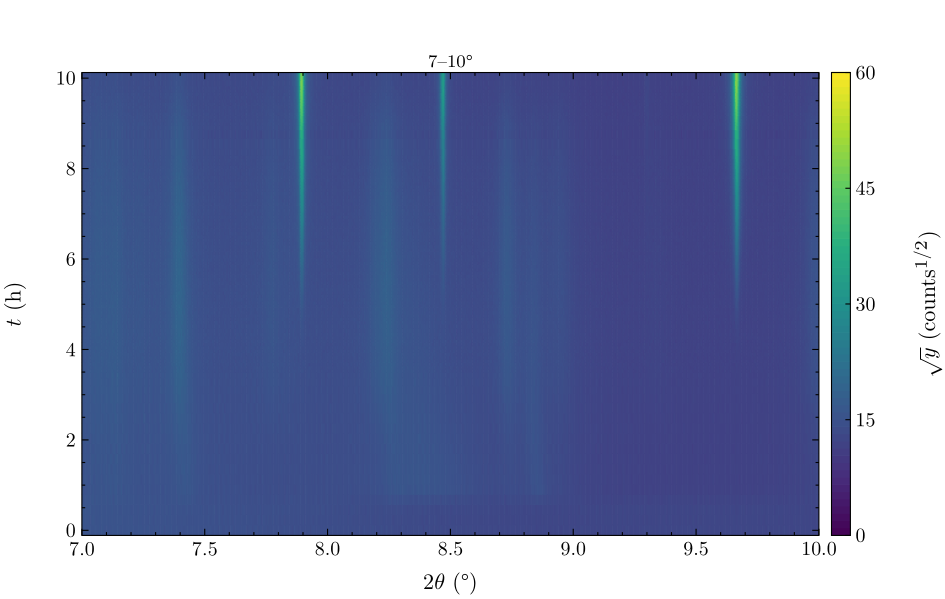
Time–2θ, all scans, window 7–10°. The time–2θ plane for all 100 scans in the window 7–10°, 0.005° grid, square-root colour scale: the first stage's broad bands from 0.9 h, the second stage's sharp lines (7.89, 8.47, 9.66°) from the 1270 °C hold; the bands do not fade as the lines grow.map-time-w2 · map · PNG · PDF
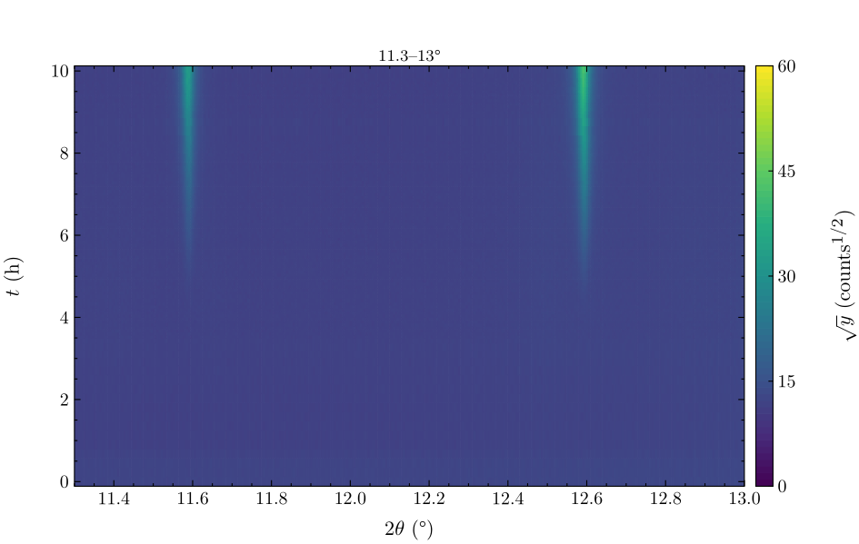
Time–2θ, all scans, window 11.3–13°. The time–2θ plane for all 100 scans in the window 11.3–13°, 0.005° grid, square-root colour scale: the lines at 11.59 and 12.59° from the 1270 °C hold to the end.map-time-w3 · map · PNG · PDF
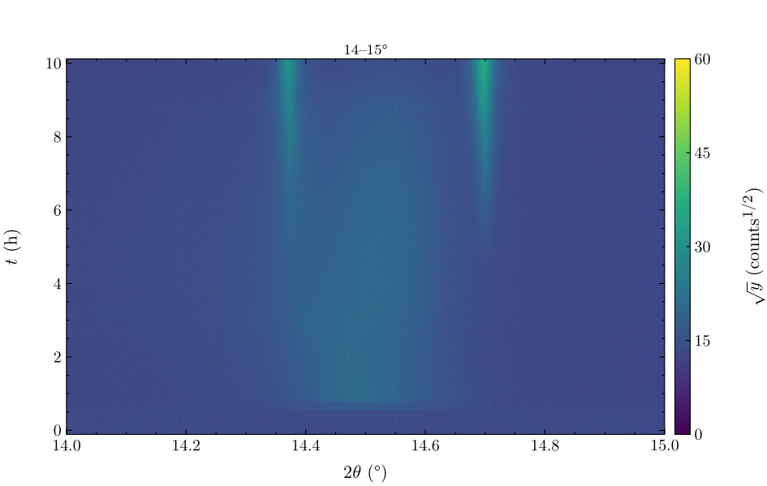
Time–2θ, all scans, window 14–15°. The time–2θ plane for all 100 scans in the window 14–15°, 0.005° grid, square-root colour scale: the broad band near 14.5° from 0.9 h, the lines at 14.37 and 14.70° from the hold.map-time-w4 · map · PNG · PDF
Maps: the 1270 °C hold on the time–2θ plane
Publication set drs/Publish/esrf-maps.drp, built to drs/Publish/esrf-maps/.
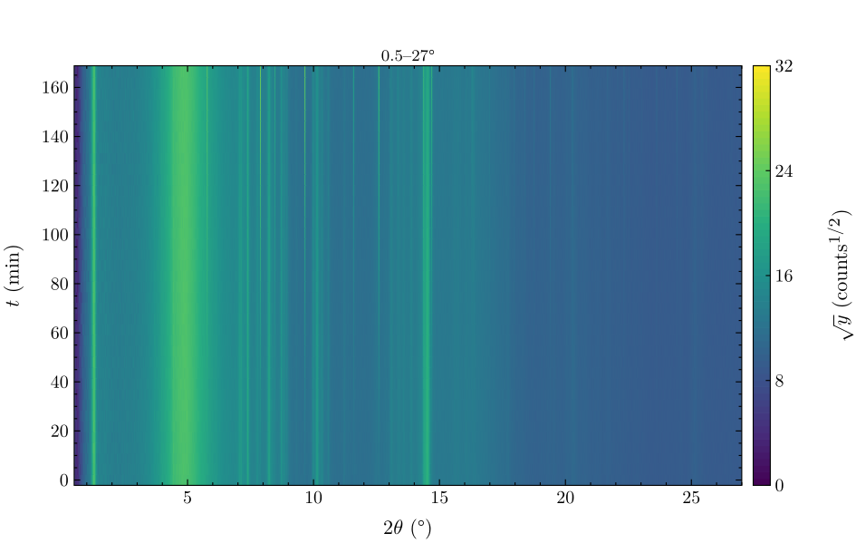
The 1270 °C hold on the time–2θ plane, 0.5–27°. The 1270 °C hold on the time–2θ plane: 39 scans every 262 s, from 22:45 on 10 June 2026 (t = 0, bottom) to 166 min (top), one row each; 2θ from 0.5 to 27° on a 0.01° grid averaged by the core; square-root colour scale. At constant nominal temperature the sharp lines of the second stage appear from a flat start and brighten steadily while the broad bands of the first stage stay: the kinetics of the transformation, to be measured on named reflections.map-hold-full · map · PNG · PDF
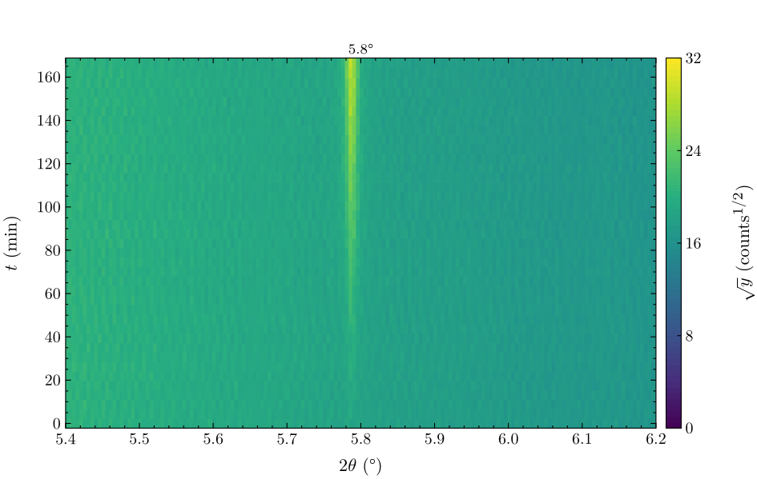
The hold, time–2θ, window 5.4–6.2°. The 1270 °C hold in the window 5.4–6.2°, 0.005° grid, square-root colour scale: the birth and growth of the 5.79° reflection over 166 min, row by row.map-hold-w1 · map · PNG · PDF
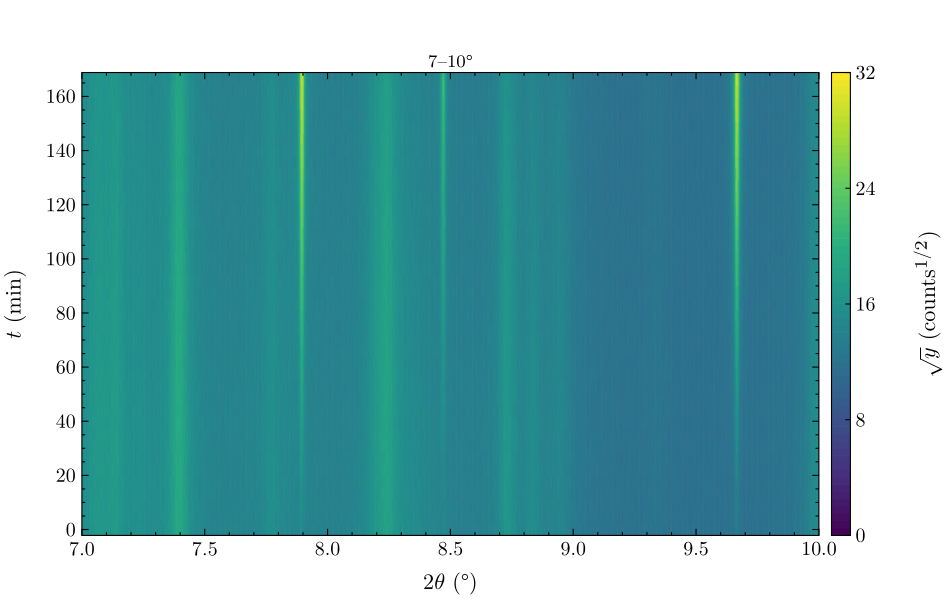
The hold, time–2θ, window 7–10°. The 1270 °C hold in the window 7–10°, 0.005° grid, square-root colour scale: the lines at 7.89, 8.47 and 9.66° rising through the broad bands of the first stage.map-hold-w2 · map · PNG · PDF
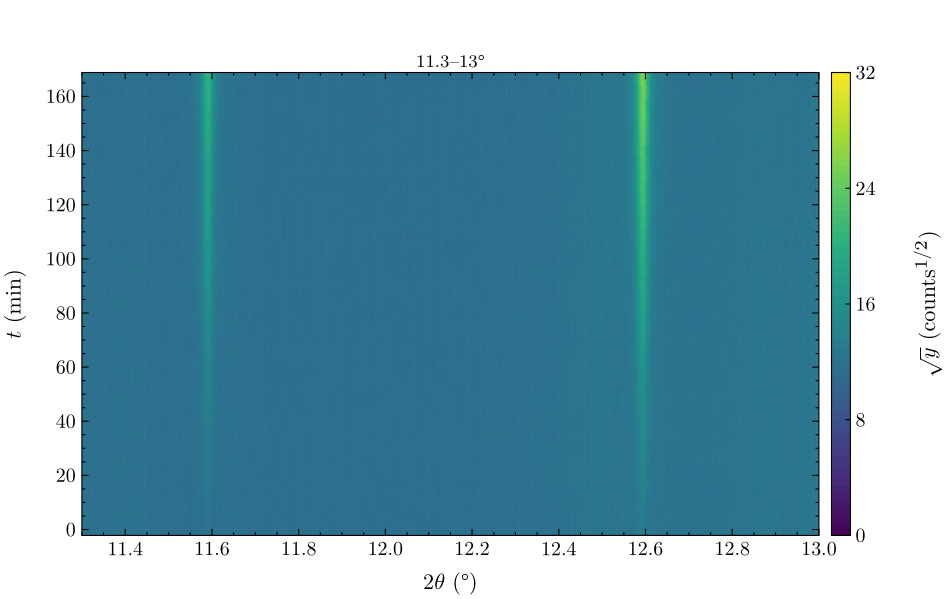
The hold, time–2θ, window 11.3–13°. The 1270 °C hold in the window 11.3–13°, 0.005° grid, square-root colour scale: the lines at 11.59 and 12.59° over 166 min.map-hold-w3 · map · PNG · PDF
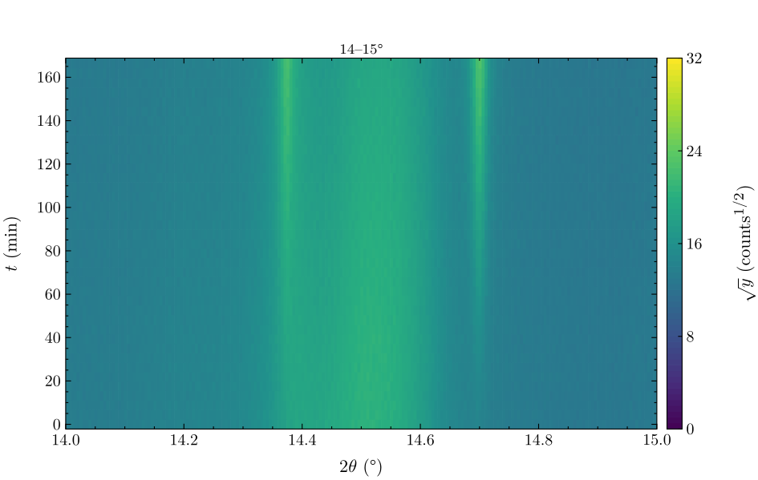
The hold, time–2θ, window 14–15°. The 1270 °C hold in the window 14–15°, 0.005° grid, square-root colour scale: the lines at 14.37 and 14.70° growing beside the broad first-stage band near 14.5°.map-hold-w4 · map · PNG · PDF